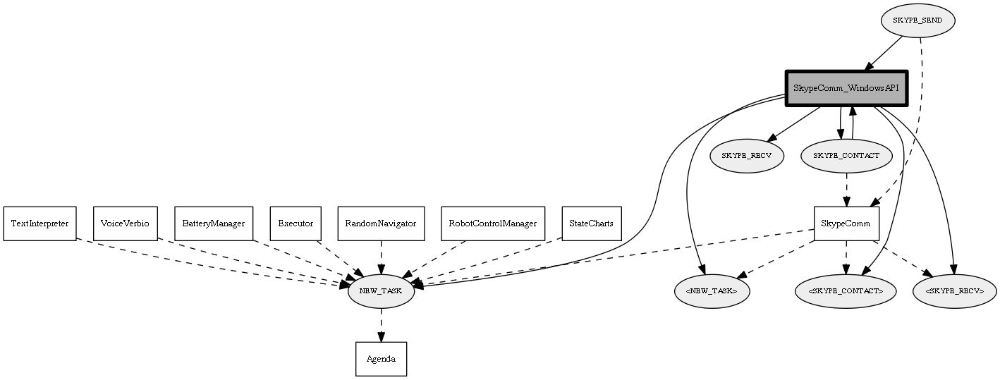

Detailed description:
SkypeComm_WindowsAPI module.This module manages a Skype client to communicate with a remote userit only works under Windows, as it uses the Skype4COM APIs.
Module graph:

TODO list:
(None)
Changes log:
(None)
Page generated by Mooxygen 1.1.0 at Thu Jan 22 11:30:21 2015